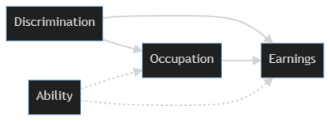

import numpy as np # for generating arrays with random numbers
import pandas as pd # dataframes
import statsmodels.api as sm # to run the actual ols model
np.random.seed(42) # to make it reproducibleThink before adding more variables to that analysis
Python
Causal Inference
Policy
Statistics
An introduction to thinking about causal models for data analysis. The purpose is to demonstrate that the popular approach of simply gathering as much data as you can and controlling for it via regression or other methods is not a good one, and is actively misleading in many cases. We should instead carefully think about plausible causal models using tools like diagrams (directed acyclic graphs, or DAGs) and then do data analysis in accordance with those models.
Introduction

Overview
Human beings think in terms of stories and in terms of how the actions they take impact the things around them. It’s our natural default way of thinking, and generally it’s pretty useful.
Doing data analysis doesn’t stop us from thinking in terms of stories and causation, but it should make us careful. With the increase in data and in the computing power to process it all, there have been claims that all we need in order to understand and act in the world is to listen to the data. But data does not speak for itself! It is interpretted by humans who will think about it through the lens of causality.
This is an introduction to thinking about causal models for data analysis. The purpose is to demonstrate that the popular approach of simply gathering as much data as you can and controlling for it via regression or other methods is not a good one, and is actively misleading in many cases. We should instead carefully think about plausible causal models using tools like diagrams (directed acyclic graphs, or DAGs) and then do data analysis in accordance with those models.
A Simple Example of Confounding
Let’s start with an example where using regression does make sense. I have noticed that the sports teams I like are more likely to lose when I am watching them on TV. This is true, but the idea that my watching them causes them to lose is not plausible. So either I’m mistaken in my data collection, very unlucky in my fanship (I am a fan of Cleveland sports teams, so this does seem likely), or there’s something else that explains the connection between my watching and my team losing. We can draw a simple diagram of what we’ve observed so far.
(I’m using Mermaid and will put the code for each diagram above them so that it’s easy to recreate and edit later).
graph LR; A[Watch Game]–>B[Lose Game]

Once we know what the proper causal model looks like, we can see that the conclusion that my watching games caused my teams to lose was based on an incomplete view - or more technically it suffered from omitted variable bias. The analysis left out an important variable that impacted things. Once we control for opponent quality, the relationship between my watching and my team losing should go back to zero.
A Much More Important Example: Women’s Wages
The idea of drawing out the diagram before doing the analysis can be applied to more important cases, like the ongoing dispute around the wage gap between men and women. Here, I’m taking an example from the excellent book Causal Inference: The Mixtape by Scott Cunningham.
When companies are accused of paying women less one of their first lines of defense is to argue that if you account for the occupational differences within the company between men and women the wage gap vanishes or at least shrinks dramatically. Cunningham (and I) think this is a poor causal model and an inadequate defense. This is important, so we’re going to consider several causal models and look directly at what they tell us using some simulated data under different specifications. Using simulated data gives us the advantage of knowing the truth of the data - so to speak - we’ll create it to have certain causal relationships and then we’ll see how the different models capture (and fail to capture) those relationships.
I’ll start with the causal diagram that we’re going to use to simulate our data. It’s a bit complicated, but we’ll take it piece by piece as we move through the data simulation and modeling.
graph LR; D[Discrimination] –> E[Earnings] D –> O[Occupation] O –> E A[Ability] -.-> O A -.-> E

We’re going to first generate a labor force where half of it is discriminated against (e.g. women being paid less, the well known gender gap in wages) and has ability randomly distributed. In the causal model sketched above both Discrimination and Ability are root causes - they’re not caused by anything else in the diagram. (Both obviously have causes outside of the system we’re currently considering). So that’s the place we’ll start.
generated_data = {
'discrimination' : np.random.randint(low = 0, high = 2, size = 10000, dtype = int), #the high argument is not inclusive, so this is randomly generating 0s and 1s.
'ability' : np.random.normal(size = 10000),
}
df = pd.DataFrame(data = generated_data)Now we need to generate some other variables of interest. We’re looking at the impact of discrimination, so let’s set that to be experienced by half of the labor force. We’re going to assume that discrimination affects both wages and choice of occupation. Here we’re worried about occupations in terms of higher and lower pay scales, so let’s set occupations to be positively associated with ability and negatively associated with discrimination.
Finally, wages are negatively associated with discrimination and positively associated with both occupation and ability.
df['occupation'] = 1 + 2 * df['ability'] - 2 * df['discrimination'] + np.random.normal(size = 10000)
df['wage'] = 1 - 1 * df['discrimination'] + 1 * df['occupation'] + 2 * df['ability'] + np.random.normal(size = 10000)
df.describe()| discrimination | ability | occupation | wage | |
|---|---|---|---|---|
| count | 10000.000000 | 10000.000000 | 10000.000000 | 10000.000000 |
| mean | 0.498700 | -0.008041 | -0.009388 | 0.471065 |
| std | 0.500023 | 1.004178 | 2.449597 | 4.545405 |
| min | 0.000000 | -3.922400 | -10.018905 | -18.328506 |
| 25% | 0.000000 | -0.674327 | -1.640437 | -2.517222 |
| 50% | 0.000000 | -0.007682 | -0.022777 | 0.482132 |
| 75% | 1.000000 | 0.668901 | 1.633467 | 3.501387 |
| max | 1.000000 | 3.529055 | 9.500154 | 16.731628 |
Now that we have our simulated data with specified causal relationships, let’s look at a few different regression models. We’ll first look at a model that only includes discrimination as a cause of wages.
# Set up matrices for regression
Y = df['wage']
X1 = df['discrimination']
# add constant for the intercept of the model
X1 = sm.add_constant(X1)
# specify the model
model1 = sm.OLS(Y, X1)
# fit the model
results1 = model1.fit()
# Look at results
# results1.summary()
results1.paramsconst 1.952182
discrimination -2.969956
dtype: float64What we’re mainly interested in is the coefficient on discrimination. Here we see that being discriminated against has a strong negative impact on wages earned. (Don’t worry about the const (constant) term, it’s not important in this example).
This isn’t a surprise based on how we set up the data. It also correctly reflects that in the real world if you just divide wages by gender you will find a large gender gap.
The dispute comes in when we talk about controlling for occupation, or a model that looks like this:
graph LR; D[Discrimination] –> E[Earnings] D –> O[Occupation] O –> E
In this model it looks like being discriminated against might raise wages slightly. We know that’s not right since we know we set up the data to have discrimination decrease earnungs. The problem is that when we added occupation to the model we opened up a brand new causal pathway from discrimination to earnings. It’s the one that runs from Discrimination–>Occupation–>Ability–>Earnings in our original causal model.
When we controlled for occupation we did two things:
- Ignored the fact that occupational choice is also a result of discrimination and as a defense of pay discrimination it would then be the mechanism by which discrimination happens, not a defense that discrimination isn’t happening.
- Opened up a causal pathway that made our estimates worse.
X3 = df[['discrimination', 'occupation', 'ability']]
X3 = sm.add_constant(X3)
model3 = sm.OLS(Y, X3)
results3 = model3.fit()
results3.paramsconst 0.988717
discrimination -0.986841
occupation 1.025762
ability 1.975298
dtype: float64What have we learned?
A major problem is that in the real world we can’t observe ability directly and put it in a regression model. Another issue is that this causal model is still very incomplete. Nonetheless, the way the sign flips back and forth depending on the model is hopefully an illustration of why it’s so important to have a theoretical model and not just throw in as much data as possible.
Data is a powerful way to tell stories, but data by itself never tells us everything we need to know. We have to interpret it carefully and think hard about the underlying models of the world we’re bringing to the data when we interpret it.
Two things to remember from this post:
- Think about the causal model before doing statistics or machine learning
- Don’t believe companies that say the gender gap goes away if you control for other things. That’s only true if you believe the causal model underlying their analysis - and you probably shouldn’t.